CPU入門
ステートマシン
type State = any;
type Transition = (s: State) => State;
let state: State;
const transition: Transition;
while(true) {
state = transition(state);
}
外部入力に応じて状態が変化するステートマシン
type State = any;
type Transition = (s: State) => State;
type Input = () => (s: State) => State;
let state: State;
const transition: Transition;
const input : Input;
while(true) {
state = transition(state);
state = input()(state);
}例：スイッチをONするとOFFするロボット


type State = "on" | "off";
type Transition = (s: State) => State;
type Input = () => (s: State) => State;
let state: State = "off";
const transition: Transition = (s: State) => "off";
const input : Input;
while(true) {
state = transition(state);
state = input()(state);
}プログラマブルステートマシン
状態からプログラムカウンタを明示的に分離する
type State = any;
type Transition = (s: State) => State;
let state: State;
const program: Transition[];
for(let counter = 0; ; counter++) {
state = program[counter](state);
}プログラムの分岐がある場合
type State = any;
type Transition = (s: State) => [State, number];
let state: State;
const program: Transition[];
let counter= 0;
while(true) {
[state, counter] = program[counter](state);
}